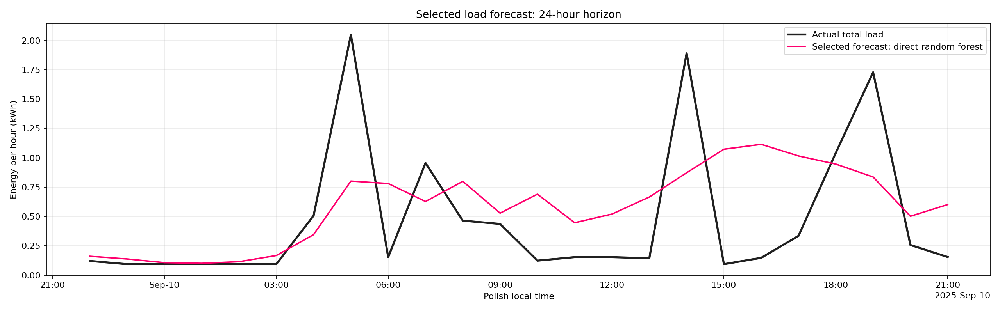
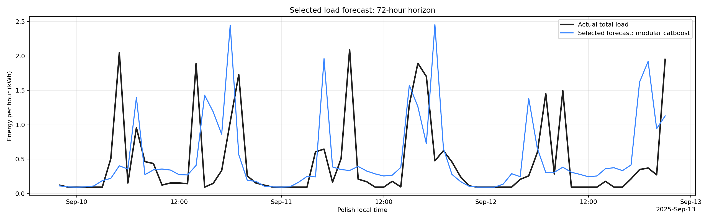
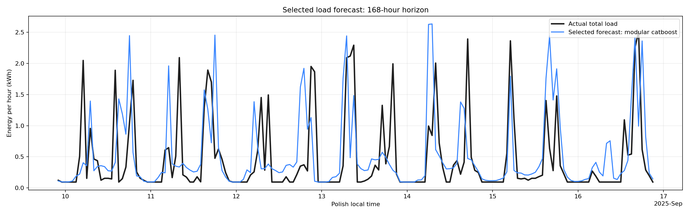

24 hours: Direct Random Forest. 72 and 168 hours: Modular CatBoost. This is a historical backtest from 2025-09-10 00:00:00 in Polish local time.
| model_id | architecture | algorithm | horizon_hours | mae | rmse | wape_pct | bias_kwh | n_hours |
|---|---|---|---|---|---|---|---|---|
| direct_random_forest | direct_residual | random_forest | 24 | 0.4193 | 0.5585 | 88.4389 | 0.1075 | 24 |
| modular_catboost | modular_physical_boiler | catboost | 72 | 0.4121 | 0.6654 | 91.8658 | 0.0741 | 72 |
| modular_catboost | modular_physical_boiler | catboost | 168 | 0.3899 | 0.6582 | 83.4868 | 0.0697 | 168 |


